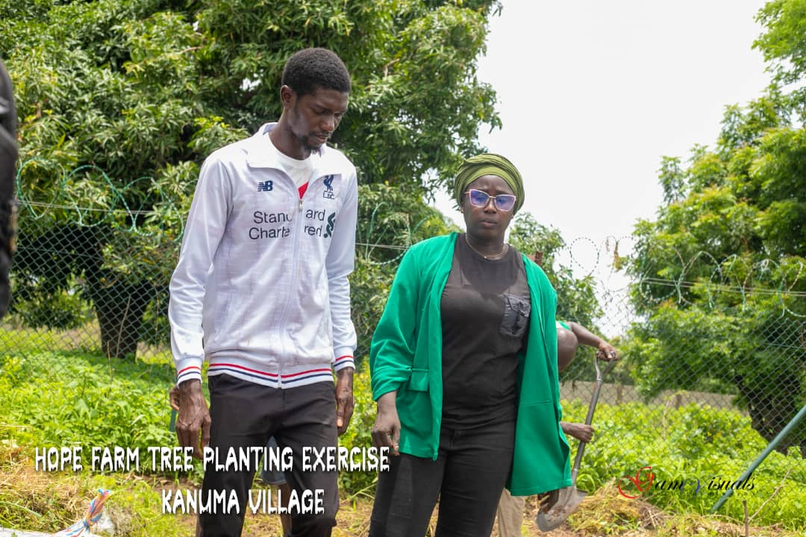
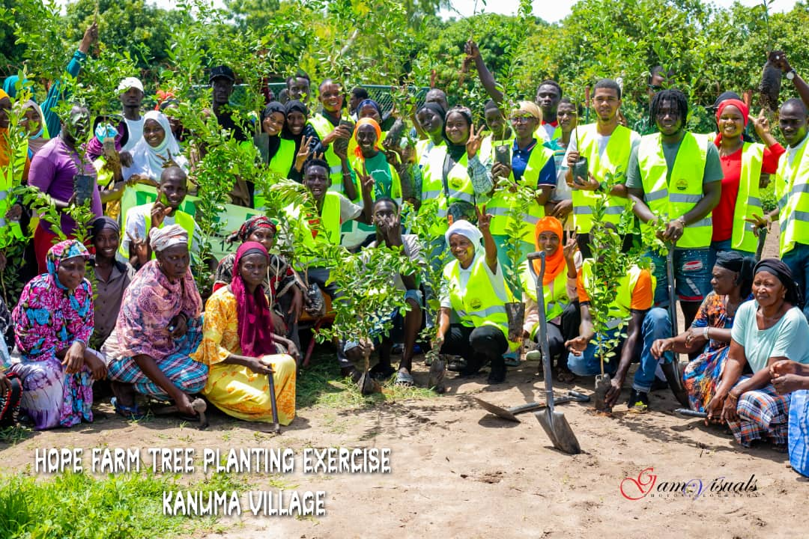

Volunteer With Us

Community Farming
Work alongside local farmers to grow organic produce that supports families and schools.

Youth Empowerment
Mentor and inspire the next generation of agricultural leaders through workshops and training.

Sustainable Irrigation
Help set up eco-friendly irrigation systems that conserve water and improve crop yields.